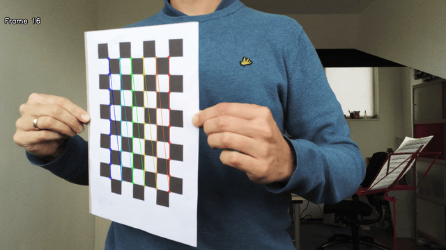
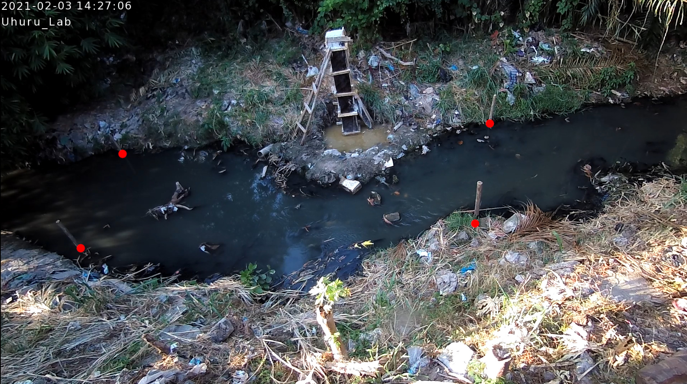
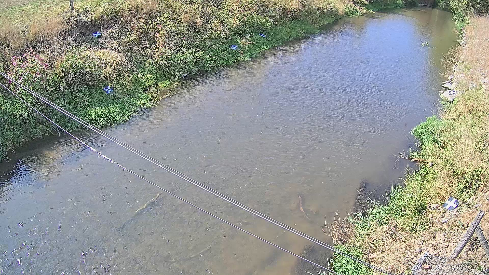
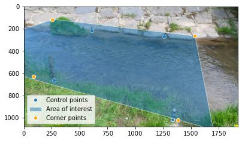

Camera configurations#
Note
This manual is a work in progress.
An essential element in doing optical velocity estimates is understanding how the Field Of View (FOV) of a camera relates to the real-world coordinates. This is needed so that a camera’s FOV can be “orthorectified”, meaning it can be transposed to real-world coordinates with equal pixel distances in meters. For this we need understanding of the lens characteristics, and understanding of where a pixel (2-dimensional with column and row coordinates, a.k.a. image coordinates) is located in the real world (3-dimensional, a.k.a. geographical coordinates). The camera configuration methods of pyorc are meant for this purpose.
Setting up a camera configuration#
In pyorc all camera configuration is collected into one single class called CameraConfig. It can be imported
from the main library and then be used to add information about the lens characteristics and the relation between
real-world and row-column coordinates. Once completed, the camera configuration can be added to a video to make it lens
and geographically aware. You can also add a camera configuration, stored in a JSON-formatted file to a video.
Once this is done, the video has added intelligence about the real-world, and you can orthorectify its frames.
Below a simple example is shown, where only the expected size of the objective in height and width is provided.
cam_config = pyorc.CameraConfig(height=1080, width=1920)
cam_config
{
"height": 1080,
"width": 1920,
"resolution": 0.05,
"window_size": 10,
"dist_coeffs": [
[
0.0
],
[
0.0
],
[
0.0
],
[
0.0
]
],
"camera_matrix": [
[
1920.0,
0.0,
960.0
],
[
0.0,
1920.0,
540.0
],
[
0.0,
0.0,
1.0
]
]
}
You can see that the inline representation of the CameraConfig object is basically a dictionary with pieces of
information in it. In this example we can already see a few components that are estimated from default values. These
can all be modified, or updated with several methods after the object has been established. The different parts we can
see here already are as follows:
heightandwidth: these are simply the height and width of the expected objective of a raw video. You must at minimum provide these to generate aCameraConfigobject.resolution: this is the resolution in meters, in which you will get your orthoprojected frames, once you have a completeCameraConfigincluding information on geographical coordinates and image coordinates, and a bounding box, that defines which area you are interested in for velocity estimation. As you can see, a default value of 0.05 is selected, which in many cases is suitable for velocimetry purposes.window_size: this is the amount of orthorectified pixels in which one may expect to find a pattern and also. the size of a window in which a velocity vector will be generated. A default is here set at 10. In smaller streams you may decide to reduce this number, but we highly recommend not to make it lower than 5, to ensure that there are enough pixels to distinguish patterns in. If patterns seem to be really small, then you may decide to reduce the resolution instead. pyorc automatically uses an overlap between windows of 50% to use as much information as possible over the area of interest. With the default settings this would mean you would get a velocity vector every 0.05 * 10 / 2 = 0.25 meters.dist_coeffs: this is a vector of at minimum 4 numbers defining respectively radial (max. 6) and tangential (2) distortion coefficients of the used camera lens. As you can see these default to zeros only, meaning we assume no significant distortion if you do not explicitly provide information for this.camera_matrix: the intrinsic matrix of the camera lens, allowing to transform a coordinate relative to the camera lens coordinate system (still in 3D) into an image coordinate (2D, i.e. a pixel coordinate). More on this can be found e.g. on this blog.
As you can see, the camera configuration does not yet have any real-world information and therefore is not sufficient to perform orthorectification. Below we describe how you can establish a full camera configuration.
Making the camera configuration geographically aware#
In case you are able to perform your field measurements with a RTK GNSS device, then your camera configuration
can be made entirely geographically aware. You can then export or visualize your results in a geographical map later
on, or use your results in GIS software such as QGIS. You do this simply by passing the keyword crs to the camera
configuration and enter a projection. Several ways to pass a projection are possible such as:
EPSG codes (see EPSG.io)
proj4 strings
Well-Know-Text format strings (WKT)
Because pyorc intends to measure velocities in distance metrics, it is compulsory to select a locally valid meter projected coordinate reference system, and not for instance an ellipsoidal coordinate system such as the typical WGS84 latitude longitude CRS. For instance in the Netherlands you may use Rijksdriehoek (EPSG code 28992). In Zambia the UTM35S projection (EPSG code 32735) is appropriate, whilst in Tanzania, we may select the UTM37S projection (EPSG code 32737). IF you use a non-appropriate or non-local system, you may get either very wrong results, or get errors during the process. To find a locally relevant system, we strongly recommend to visit the EPSG site and search for your location. If you do not have RTK GNSS, then simply skip this step and ensure you make your own local coordinate system, with unit meter distances.
Once your camera configuration is geographically aware, we can pass all other geographical information we may need in any projection, as long as we notify the camera configuration which projection that is. For instance, if we measure our ground control points (GCPs, see later in this manual) with an RTK GNSS set, and store our results as WGS84 lat-lon points, then we do not have to go through the trouble of converting these points into the system we chose for our camera configuration. Instead we just pass the CRS of the WGS84 lat-lon (e.g. using the EPSG code 4326) while we add the GCPs to our configuration. We will see this later in this manual.
Below, we show what the configuration would look like if we would add the Rijksdriehoek projection to our camera configuration. You can see that the code is converted into a Well-Known-Text format, so that it can also easily be stored in a generic text (json) format.
cam_config = pyorc.CameraConfig(height=1080, width=1920, crs=32631)
cam_config
{
"height": 1080,
"width": 1920,
"crs": "PROJCRS[\"WGS 84 / UTM zone 31N\",BASEGEOGCRS[\"WGS 84\",ENSEMBLE[\"World Geodetic System 1984 ensemble\",MEMBER[\"World Geodetic System 1984 (Transit)\"],MEMBER[\"World Geodetic System 1984 (G730)\"],MEMBER[\"World Geodetic System 1984 (G873)\"],MEMBER[\"World Geodetic System 1984 (G1150)\"],MEMBER[\"World Geodetic System 1984 (G1674)\"],MEMBER[\"World Geodetic System 1984 (G1762)\"],MEMBER[\"World Geodetic System 1984 (G2139)\"],ELLIPSOID[\"WGS 84\",6378137,298.257223563,LENGTHUNIT[\"metre\",1]],ENSEMBLEACCURACY[2.0]],PRIMEM[\"Greenwich\",0,ANGLEUNIT[\"degree\",0.0174532925199433]],ID[\"EPSG\",4326]],CONVERSION[\"UTM zone 31N\",METHOD[\"Transverse Mercator\",ID[\"EPSG\",9807]],PARAMETER[\"Latitude of natural origin\",0,ANGLEUNIT[\"degree\",0.0174532925199433],ID[\"EPSG\",8801]],PARAMETER[\"Longitude of natural origin\",3,ANGLEUNIT[\"degree\",0.0174532925199433],ID[\"EPSG\",8802]],PARAMETER[\"Scale factor at natural origin\",0.9996,SCALEUNIT[\"unity\",1],ID[\"EPSG\",8805]],PARAMETER[\"False easting\",500000,LENGTHUNIT[\"metre\",1],ID[\"EPSG\",8806]],PARAMETER[\"False northing\",0,LENGTHUNIT[\"metre\",1],ID[\"EPSG\",8807]]],CS[Cartesian,2],AXIS[\"(E)\",east,ORDER[1],LENGTHUNIT[\"metre\",1]],AXIS[\"(N)\",north,ORDER[2],LENGTHUNIT[\"metre\",1]],USAGE[SCOPE[\"Engineering survey, topographic mapping.\"],AREA[\"Between 0\u00b0E and 6\u00b0E, northern hemisphere between equator and 84\u00b0N, onshore and offshore. Algeria. Andorra. Belgium. Benin. Burkina Faso. Denmark - North Sea. France. Germany - North Sea. Ghana. Luxembourg. Mali. Netherlands. Niger. Nigeria. Norway. Spain. Togo. United Kingdom (UK) - North Sea.\"],BBOX[0,0,84,6]],ID[\"EPSG\",32631]]",
"resolution": 0.05,
"window_size": 10,
"dist_coeffs": [
[
0.0
],
[
0.0
],
[
0.0
],
[
0.0
]
],
"camera_matrix": [
[
1920.0,
0.0,
960.0
],
[
0.0,
1920.0,
540.0
],
[
0.0,
0.0,
1.0
]
]
}
Note
A smart phone also has a GNSS chipset, however, this is by far not accurate enough to provide the measurements needed for pyorc. We recommend using a (ideal!) RTK GNSS device with a base station setup close enough to warrant accurate results, or otherwise a total station or spirit level.
Storing and loading a camera configuration#
TODO
Camera intrinsic matrix and distortion coefficients#
An essential component to relate the FOV to the real world is the camera’s intrinsic parameters, i.e. parameters that define the dimensions and characteristics of the used camera lens and its possible distortion. As an example, a smartphone camera has a very flat lens, with a short focal distance. This often results in the fact that objects or people at the edges of the field of view seem stretched, while the middle is quite reliable as is. With a simple transformation, such distortions can be corrected. Fish eye lenses, which are very popular in trail cameras, IP cameras and extreme sport cameras, are constructed to increase the field of view at the expense of so-called radial distortions. With such lenses, straight lines may become distorted into bend lines in your objective. Imagine that this happens with a video you wish to use for velocimetry, then your geographical referencing can easily be very wrong (even in the order of meters with wide enough streams) if you do not properly account for these. If for example your real-world coordinates are measured somewhere in the middle of the FOV, then velocities at the edges are likely to be overestimated.
The default parameters (i.e. no distortion and an ideal world camera intrinsic matrix) may therefore be insufficient and can lead to unnecessary error in the interpretation of the real world distances in the FOV. To establish a more sound camera intrinsic matrix and distortion coefficients, we recommend to take a video of a checkerboard pattern using the exact settings you will use in the field and perform camera calibration with this. Below you can see an animated .gif of such a video. Basically, you print a checkerboard pattern, hold it in front of your camera, ensure that you run video at the exact settings at which you intend to record in the field, and capture the printed checkerboard pattern from as many angles as possible. Include rotation and movements in all directions.
Preparing a video for camera calibration#
We have a method available to establish an intrinsic matrix and distortion coefficients. It reads in a video in which a user shows a chessboard pattern and holds it in front of the camera in many different poses and at as many different locations in the field of view as possible. It then strips frames in a staggered manner starting with the first and last frame, and then the middle frame, and then the two frames in between the first, last and middle, and so on, until a satisfactroy number of frames have been found in which the chessboard pattern was found. The intrinsic matrix and distortion coefficients are then calculated based on the results, and added to the camera configuration.
Note
Making a video of a chessboard pattern and calibrating on it is only uyseful if you do it the right way. Take care of the following guidelines:
ensure that the printed chessboard is carefully fixed or glued to a hard object, like a strong straight piece of cardboard or a piece of wood. Otherwise, the pattern may look wobbly and cause incorrect calibration
a larger chessboard pattern (e.g. A0 printed) shown at a larger distance may give better results because the focal length is more similar to field conditions.
make sure that while navigating you cover all degrees of freedom. This means you should move the checkerboard from top to bottom and left to right; in all positions, rotate the board around its horizontal and vertical middle line; and rotate it clockwise.
make sure you record the video in exactly the same resolution as you intend to use during the taking of the videos in the field.
If the calibration process is not carefully followed it may do more harm than good!!!
An example of extracts from a calibration video with found corner points is shown below. It gives an impression of how you can move the chessboard pattern around. As said above, it is better to print a larger chessboard and show that to the camera at a larger distance.
Lens calibration method#
Once you have your video, the camera calibration is very simple. After creating your camera configuration you can supply the video in the following manner:
calib_video = "calib_video.mp4"
cam_config.set_lens_calibration(calib_video)
When you execute this code, the video will be scanned for suitable images, and will select frames that are relatively far apart from each other. When a suitable image with patterns is found, the algorithm will show the image and the found chessboard pattern. There are several options you may supply to the algorithm to influence the amount of internal corner points of the chessboard (default is 9x6), the maximum frames number that should be used for calibration, filtering of poorly performing images, switch plotting and writing plots to files (for later checking of the results) on or off.
Note
the camera calibration is still experimental. If you have comments or issues kindly let us know by making a github issue.
Ground control points#
Besides the characterization of the lens used for taking the video, we must also characterise the camera to real-world coordinate system. In other words: we must know where a row and column in our camera perspective may lie in the real world. Naturally, this is a poorly defined problem as your camera’s perspective can only be 2D, whilst the real world has 3 dimensions. However, our problem is such that we can always fix one dimension, i.e. the elevation. If we already know and fix the level of the water (z-coordinate), then we can interpret the remaining x-, and y-coordinates if we give the camera calibration enough information to interpret the perspective. We do this by providing so-called ground control points, that are visible in the FOV, and of which we know the real-world coordinates.
Structure of ground control points#
The ground control points are a simple python dictionary that should follow a certain schema. The schema looks as follows:
{
"src": [
[int, int],
[int, int],
...,
],
"dst": [
[float, float, Optional(float)],
[float, float, Optional(float)],
...,
],
"z_0": Optional(float),
"h_ref": Optional(float),
"crs": Optional(int, str)
}
The fields have the following meaning:
srccontains [column, row] locations of the control points in the FOV.dst: contains [x, y] locations (in case you use 4 control points on one vertical plane) or [x, y, z] locations ( in case you use 6 control points with arbitrary elevation).z_0: water level measured in the vertical reference of your measuring device (e.g. RTK GNSS)h_ref: water level as measured by a local measurement device such as a staff gaugecrs: the CRS in which the control points are measured. This can be different from the CRS of the camera configuration itself in which case the control points are automatically transformed to the CRS of the camera configuration. If left empty, then it is assumed the CRS of the measured points and the camera configuration is the same.
Measuring the GCP information#
Below we describe how the information needed should be measured in the field during a dedicated survey. This is typically done every time when you do an incidental observation, or once during the installation of a fixed camera. If you leave the camera in place, you can remove control points after the survey.
Example of survey situations#
You will notice in the next sections that you can typically measure either 4 control points at one vertical plane (water surface) or 6 or more points at random elevations. You prepare this situation by spreading easy to recognize markers over your Field of View. In the figure below you see two examples, one where 4 sticks were placed in the water and the interface of the sticks with the water (red dots) is measured. And one where 6 black-and-whiter markers are spread over the field of view.
4 GCPt at water surface - Chuo Kikuu River, Dar es Salaam, Tanzania |
 |
6 (+) GCPs spread over banks and FOV - Geul River, Limburg, The Netherlands |
 |
The schematic below shows in a planar view what the situation looks like. It is important that the control points are nicely spread over the Field of View, and this is actually more important than an equal spread of points of left and right bank. In the schematic we show this by having only 2 control points at the bank close to the camera, and 4 at the opposite side. If you have your camera on a bridge in the middle of the bridge deck, then having 3 (or more) points left as well as right makes the most sense.
Planar schematic view of site survey situation.#
Ensuring that the vertical plane is fully understood is also important.
The z_0 and h_ref optional keys are meant to allow a user to provide multiple videos with different water
levels. If you intend to do this, you may install a water level measuring device on-site such as a staff gauge or
pressure gauge, that has its own vertical zero-level reference. Therefore, to use this option the following should be
measured and entered:
measure the water level during the survey with your local device (e.g. staff gauge) and insert this in
h_refalso measure the water level with your survey device such as total station or RTK GPS. This has its own vertical zero level. This level must be inserted in
z_0. Any other surveyed properties such as the lens position and the river cross section must be measured with the same horizontal and vertical coordinate system asz_0.
The overview of these measures is also provided in the schematic below.
Cross-section schematic view of site survey situation.#
Entering control points in the camera configuration#
The coordinates in the src field are simply the pixel coordinates in your video, where the GCPS are located.
You can look these up by plotting the first frame with plt.imshow or storing
the first frame to a file and open that in your favorite photo editor and count the pixels there.
dst contains the real-world coordinates, that belong to the same points, indicated in src.
dst must therefore contain either 4 x, y (if the left situation is chosen) or 6 x, y, z coordinates (if the right
situation is chosen.
In both cases you provide the points as a list of lists.
z_0 must be provided if 6 randomly placed points are used. If you intend to provide multiple videos with a locally
measured water level, then also provide h_ref as explained above. In case you have used 4 x, y points at the water surface, then also provide z_0. With this information
the perspective of the water surface is reinterpreted with each video, provided that a water level (as measured with the
installed device) is provided by the user with each new video.
Note
For drone users that only make nadir aimed videos, we are considering to also make an option with only 2 GCPs
possible. If you are interested in this, kindly make an issue in GitHub. For the moment we suggest to use the 4
control point option and leave z_0 and h_ref empty.
Finally a coordinate reference system (CRS) may be provided, that indicates in which CRS the survey was done if this
is available. This is only useful if you also have provided a CRS when creating the camera configuration. If you
for instance measure your control points in WGS84 lat-lon (EPSG code 4326) then pass crs=4326 and your coordinates
will be automatically transformed to the local CRS used for your camera configuration.
A full example that supplies GCPs to the existing camera configuration in variable cam_config is shown below:
src = [
[1335, 1016],
[270, 659],
[607, 214],
[1257, 268]
] # source coordinates on the frames of the movie
dst = [
[6.0478836167, 49.8830484917],
[6.047858455, 49.8830683367],
[6.0478831833, 49.8830964883],
[6.0479187017, 49.8830770317]
] # destination locations in long/lat locations, as measured with RTK GNSS.
z_0 = 306.595 # measured water level in the projection of the GPS device
crs = 4326 # coordinate reference system of the GPS device, EPSG code 4326 is WGS84 longitude/latitude.
cam_config.set_gcps(src=src, dst=dst, z_0=z_0, crs=crs)
Setting the lens position#
For treatment of multiple videos, the water surface must also be reprojected to a new water level. This requires the
position of the x, y, z of the lens position. This can be provided using a simple method set_lens_position. You only
need to provide x, y, z and the CRS (if this is different from the CRS of the camera configuration itself.
A full example supplying the lens position to the existing cam_config is shown below:
lens_position = [6.0478872, 49.8830221, 309.8] # lon, lat, elevation position of the camera
cam_config.set_lens_position(*lens_position, crs=4326)
Setting the area of interest#
pyorc is organized such that it processes a planar rectangular shaped area as shown in the example below over the Wark River in Luxemburg. The results of reprojection and velocity estimation will all fit in this area of interest in the form of raster maps. pyorc is also very flexible in the rotation of the grid. River sections almost never follow an ideal north-south or east-west direction, and therefore it is much more practical to allow for a rotated grid.

The area of interest can theoretically be provided directly, simply by providing
a shapely.geometry.Polygon with 5 bounding points as follows (pseudo-code):
cam_config.bbox = Polygon(...)
However, this is quite risky, as you are then responsible for ensuring that the area of interest is rectangular, has exactly 4 corners and fits in the FOV. Currently, there are no checks and balances in place, to either inform the user about wrongfully supplied Polyons, or Polygons that are entirely outside of the FOV.
Therefore, a much more intuitive approach is to use set_bbox_from_corners. You simply supply 4 approximate
corner points of the area of interest within the camera FOV. pyorc will then find the best planar bounding box
around these roughly chosen corner points and return this for you. A few things to bear in mind while choosing these:
Ensure you provide the corner points in the right order. So no diagonal order, but always along the expected Polygon bounds.
If you intend to process multiple videos with the same camera configuration, ensure you choose the points wide enough so that with higher water levels, they will likely still give a good fit around the water body of interest.
Important: if water follows a clear dominant flow direction (e.g. in a straight relatively uniform section) then you may use the angular filter later on, to remove spurious velocities that are not in the flow direction. In order to make the area of interest flow direction aware, ensure to provide the points in the following order:
upstream left-bank
downstream left-bank
downstream right-bank
upstream right-bank
where left and right banks are defined as if you are looking in downstream direction.
Below we show how the corners are provided to the existing cam_config.
corners = [
[255, 118],
[1536, 265],
[1381, 1019],
[88, 628]
]
cam_config.set_bbox_from_corners(corners)
This yields the bounding box shown in the figure above, which is the same as the one shown in the perspective below. You can see that the rectangular area is chosen such that the chosen corner points at least fit in the bounding box, and the orientation is chosen such that it follows the middle line between the chosen points as closely as possible.
CameraConfig properties and other methods#
When a full camera configuration is available, you can access and inspect several properties and access a few other methods that may be useful if you wish to program around the API. We refer to the API documentation.
CameraConfig plots#
We highly recommend to first inspect your camera configuration graphically, before doing any further work with it.
Examples have already been shown throughout this manual, but you can also plot your own camera configurations, either
in planar view, or in the original camera FOV. For this the plot method has been developed. This method can
always be applied on an existing matplotlib axes object, by supplying the ax keyword and referring the the axes
object you wish to use.
Planar plotting#
Planar plotting is done by default. The most simple approach is:
cam_config.plot()
This will yield just the camera configuration information, and can always be used, whether you have a geographically
aware camera configuration (CRS provided) or not. If the camera configuration is geographically aware, then you
can also add a satellite or other open map as a background. pyorc uses the cartopy package to do this. You can
control this with the tiles keyword to define a tiles layer (see this page)
Additional keywords you may want to pass to the tiles set can be defined in the keyword tiles_kwargs. Finally, the
zoom level applied can be given in the keyword zoom_level. By default, a very high zoom level (18) is chosen,
because mostly, areas of interest cover only a small geographical region. The geographical view shown above can be
displayed as follows:
cam_config.plot(tiles="GoogleTiles", tiles_kwargs=dict(style="satellite"))
Plotting in camera FOV#
To plot in the camera FOV, simply set camera=True.
cam_config.plot(camera=True)
This may look a little awkward, because plotting in matplotlib is defaulting to having the 0, 0 point in the bottom left while your camera images have it at the top-left. Furthermore, you cannot really interpret what the FOV looks like. Hence it makes more sense to utilize one frame from an actual video to enhance the plotting. Here we use the video on which the camera configuration is based, extract one frame, and plot it within one axes.
fn = r"20220507_122801.mp4"
video = pyorc.Video(fn, camera_config=cam_config, start_frame=0, end_frame=1)
# get the first frame as a simple numpy array
frame = video.get_frame(0, method="rgb")
# combine everything in axes object "ax"
ax = plt.axes()
ax.imshow(frame)
cam_config.plot(ax=ax, camera=True)